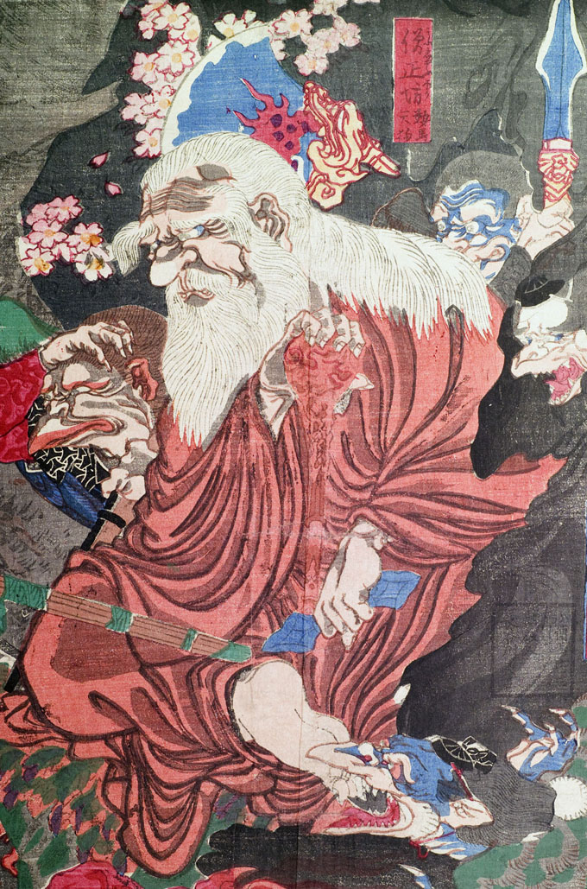

僧正坊；ソウジョウボウ，鞍馬天狗；クラマテング，杖；ツエ，独鈷；トッコ

僧正坊鞍馬天狗。頭髪、眉毛、ひげが白い。髪は肩まで伸び、眉毛は垂れ下がっている。口と顎に生えたひげは、胸元まで伸びている。額に皺が寄り、鼻は大きい。赤い衣をまとってあぐらをかいて座り、右手に杖を、左手に独鈷を掴んでいる。
著作者：猩々周麿（河鍋暁斎）／出典：親書誌：U426_nichibunken_0130：僧正坊と牛若丸；ソウショウボウトウシワカマル／日付：2009／資源識別子：U426_nichibunken_0130_0001_0001
Copyright (c)2010- International Research Center for Japanese Studies, Kyoto, Japan. All rights reserved.